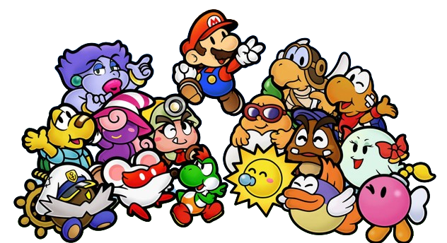

The series of


 |
Paper Mario 64 is where the series began. This game gets a plathora of things right on its first try. You can't go wrong with this one! It's got great gameplay, a fun story, and a unique art style that stands the test of time. There's a wide cast of fun characters you will meet and interact with, and the RPG gameplay is simple yet very enjoyable. The badge system is an aspect of the game that makes it shine amongst its successors. |
 |
Paper Mario: The Thousand Year Door is widely regarded as the best in the series! It iterated upon its predecessor in major ways, adding new battle mechanics, a grander story, and even quirkier characters! This game takes a lot more creative risks and goes for it, whereas the Paper Mario 64 was a lot more grounded in it creative scope. TTYD also introduces a lot more exploration and side-content beyond the main story making it feel like a full course meal. |
 |
Super Paper Mario is quite possibly the most devisive in the series. Some love it, and some don't like it. It was the first major departure from the RPG genre that the first two games had. Super Paper Mario took its identity in a different direction; becoming a 2D platformer. Despite its deviation from the standard, this game has fun and engaging gameplay, with extremely unique locales and characters, and interesting puzzles to solve. It also just might have the single greatest story ever told in a Mario game. |

|
Unlike Super Paper Mario, which is a devicive title already, Paper Mario: Sticker Star is disliked heavily by many. This game marks a significant divide between "Old Paper Mario" and "New Paper Mario". While Sticker Star's overworld gameplay harkens back to the first two games, many fans complain about its lack of RPG mechanics such as experience points or party members. Another large flaw in this game is it is severely lacking in creative characters, locales, and a compelling story, causing it to feel very lifeless to play. |

|
What The Thousand Year Door was to Paper Mario 64 is what Paper Mario: Color Splash is to Sticker Star. It has the same base mechanics, but iterates upon them. Therefore, many complaints about Sticker Star carries over to Color Splash as well. The main ones being the lack of RPG mechanics and unique characters. However, this game feels like a lot more soul has been put into it. There's more fun writing, more interesting areas to visit, and a slightly more compelling story. |

|
Paper Mario: The Origami King, the most recent release in the series, came out with much anticipation behind it. This game righted a lot of wrongs done by the previous two games, but still fell short in other respects. This game has a much better story, more ambitious locations, and more fun characters to interact with. It is also a very beautiful game, both visually and in terms of its soundtrack. The battle system was completely revamped for this game, making it more puzzle-like rather than turn-based strategy. |